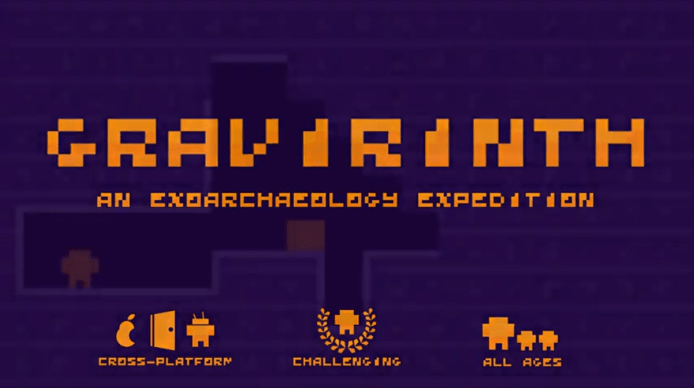

Gravirinth
About Gravirinth
According to legend, a forgotten civilization once mastered the power of gravity, which they used to travel across the Milky Way, in search for alien life. Eager at first to share their wisdom, soon they became aware that most alien life forms were not ready to receive this great power...
So an enigma was devised to test the intelligence of alien societies, a puzzle marvelous yet so obscure that finding it would be a challenge in the first place. Thus the Gravirinth were born, each hidden into the most promising solar systems.
In the next millennia, few Gravirinth were ever found, and even fewer yielded their secrets, a rare moment of great joy where two civilisations found they were not alone in the vast cosmos. In the Solar System too had once a Gravirinth been found, but its location was lost to mankind...
...until Xeno, the Exoarchaeologist, arrived. Will the Gravirinth reveal its mysteries?
Features
- A deep labyrinth of spatial puzzles;
- an exoarchaeology space expedition at the outskirts of the solar system;
- a carefully hand-crafted, minimalist and mysterious atmosphere;
- special features:
- for experienced puzzlers: harder bonus levels;
- for perfectionists: a smart action counter;
- for explorers: some very well-hidden or almost unreachable paths;
Release notes
Schedule
Gravirinth was released three days after February 28th 2019 and made freely available on June 21st 2019.
Development log
Follow development @ Gravirinth's log, or...
Trailer
Press
Would you like....
- to write an article about Gravirinth?
- to feature Gravirinth in a curated collection?
- to record a playthrough video or livestream?
Feel free to use and edit, for those purposes, all material on this page, including:
- text;
- screenshots and logo below;
- recorded gameplay footage;
Screenshots & Logo
Download all screenshots and logo at once:download all (zip archive)
Other inquiries
Check also the Press kit or contact Pedro PSI for all unusual requests!
How to play
Read the instructions below beforehand or skip them in favour of Gravirinth's interactive tutorial!

Navigate the Gravirinth with left up right down or W A S D. Step on gravity beacons to change your specific gravity! The controls change accordingly.
Pick any number of blocks with down or S. Place them strategically with up or W to overcome obstacles!
Blocks also have their own specific gravity! Push blocks in your way or throw them horizontally to a higher platform!
What if two specific gravities collide? An unstable gravity field materialises, keeping everything in place. Untangle the collision, and it eventually vanishes!

Base communicates with you though a low-bandwidth intercom. In this way general tips and orientation hints may be given.
Finding the elusive fourfold orbs requires persistence and inventiveness. Try your best!

Additional Controls
Your progress is reported continuously to base, so you may retrace your steps whenever you've done anything wrong. Press Z on your exopad.
A special record of your progress is created whenever you reach a save point. Press R on your exopad to go back in time! This should work even if you quit the game for a while.

At the end of the expedition, Press X on your exopad to call rescue, unless you prefer to collect any still accessible fourfold orbs...
Controls - touchscreen
Tap to simulate pressing X and swipe to simulate an arrow keypress.
E-mail Pedro PSI real-time feedback
Press E anytime to e-mail real-time feedback to Pedro PSI! Much appreciated!
Level navigation
Press L or click Select level in the game bar to navigate freely to previous checkpoints, or return to the most recent one. Please be aware that saving after going to a past checkpoint will erase your most recent checkpoint saves..
Type the level number directly with 0 1 2 3 4 5 6 7 8 9, press Tab/Shift+Tab or Left/Right to cycle through levels, Enter or Click to confirm, Esc or L to cancel.
Fullscreen
Toggle Fullscreen by pressing F.
Hall of fame
Once you beat Gravirinth, you'll be invited to enter the Hall of Fame! As soon as you pass the final credits screen after winning, you'll be able to type your name in a new window. Make sure you are connected to the internet, then press Submit to be remembered forever or close the window to forsake your glory.
Community
Guestbook
Enjoyed Gravirinth? Add your message below to the Creative Archive's Guestbook!
Credits
Gravirinth by Pedro PSI, 2019.
Music
Background music by Stellardrone.
| Track | Album | Year | License |
|---|---|---|---|
| Eternity | Light Years | 2013 | CC-BY 3.0 |
| Comet Halley | Light Years | 2013 | CC-BY 3.0 |
| Billions and Billions | A moment of stillness | 2011 | CC-BY 3.0 |
| Twilight | A moment of stillness | 2011 | CC-BY 3.0 |
| Between the Rings | Between The Rings | 2017 | CC-BY 3.0 |
Game Engine
Made with Puzzlescript and Pedro PSI's game bar!
Inspect the source freely, but consider the option to support the Creative Archive!
Special thanks
All beta testers for their comprehensive feedback! Among them a special mention to Lucas LeSlo for outstanding help.
F.A.Q.
What does the name Gravirinth mean?
Gravirinth is a combination of the words Gravity and Labyrinth. It was coined by contemporary exoarchaeologists, because the extrasolar name is unknown.
How deep is the Gravirinth?
As far as the sonars can tell, the Gravirinth is composed of a multitude of interconnected chambers of various sizes. Depending on how a chamber is defined, this number may vary, but probably more than 32. Some puzzles span multiple chambers, an some chambers comprise multiple puzzles.
How many fourfold orbs can be collected in Gravirinth?
Certainly more than 12. The exact number eludes most exoarchaeologists.
The ultimate purpose of the fourfold orbs within the Gravirinth is unknown, although it may contribute to a more accurate classification of alien life traits such as inventiveness and persistence or simply reward exploration.
What inspired Gravirinth?
The exoarcheology theme was inspired by Michio Kaku's Future of Mankind.
The game mechanic emerged naturally, drawing elements from Play Mini Gemini Replay (basic platform mechanics), Whirlpuzzle (idea of rotation and space theme) and Tiaradventur (inventory, narrative system, management of a large word map), whose source codes are openly available.
Specific gravity is also a central theme of the game William Chyr's Manifold Garden.
How is Gravirinth ambitious from a coding point of view?
The features below make a great game experience and are a puzzlescript coding challenge:
- a large animated world map;
- a camera directing system;
- a message selector, for storytelling and strategic hint placement;
- a smart action counter;
- inventory/dialogue display banners, trailing along with the camera;
- progressively revealing and activating unseen areas.
Altogether, these features required more than 4000 lines of puzzlescript code, including the main labyrinth's 5734 tiles - laid by hand and thoroughly tested, since a single tile may mean the difference from an hard puzzle to an impossible one.
Custom sound effects and a background music playlist were linked to the puzzlescript engine.